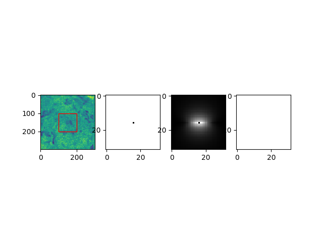

Note
Click here to download the full example code
Fitting ICS data by a RICS model¶

import tttrlib
import numpy as np
import scipy.optimize
import pylab as p
import mpl_toolkits.mplot3d
import matplotlib.patches
import tifffile
def rics_simple(
line_shift: int,
pixel_shift: int,
n: float,
diffusion_coefficient: float = 2.0,
offset: float = 0.0,
pixel_duration: float = 11.1,
line_duration: float = 3.33,
pixel_size: float = 40.0,
w_r: float = 0.2,
w_z: float = 1.0,
verbose: bool = False
):
"""Simple RICS model.
-> One 3D diffusion component.
-> No Triplet/blinking terms.
-> No Shift between correlations.
:param line_shift:
:param pixel_shift:
:param n:
:param diffusion_coefficient: in um2/s
:param offset:
:param pixel_duration: in micro seconds
:param line_duration: in milli seconds,
:param pixel_size: nano meter
:param w_r: radius of gaussian in xy plane, in um
:param w_z: radius of gaussian in z, in um
:param verbose:
:return:
"""
if verbose:
print("diffusion_coefficient", diffusion_coefficient)
print("n", n)
print("offset", offset)
diffusion_coefficient *= 10 ** -12
pixel_duration *= 10 ** -6
pixel_size *= 10 ** -9
line_duration *= 10 ** -3
w_r *= 10 ** -6
w_z *= 10 ** -6
mv = (abs(pixel_shift * pixel_duration + line_shift * line_duration))
return offset + 2. ** (-3 / 2) / n * \
(1 + 4 * diffusion_coefficient * mv / w_r**2)**(-1) * \
(1 + 4 * diffusion_coefficient * mv / w_z**2)**(-0.5) * \
np.exp(-pixel_size**2*(pixel_shift ** 2 + line_shift ** 2) / (w_r**2 + 4 * diffusion_coefficient * mv))
def rics_diffusion_triplet(
line_shift: int,
pixel_shift: int,
n: float,
diffusion_coefficient: float = 2.0,
offset: float = 0.0,
pixel_duration: float = 11.1,
line_duration: float = 3.33,
pixel_size: float = 40.0,
w_r: float = 0.2,
w_z: float = 1.0,
tauT: float = 0.002, # Triplet time in milliseconds
aT: float = 0.1, # Triplet amplitude
verbose: bool = False
):
"""Simple RICS model.
-> One 3D diffusion component.
-> Triplet/blinking terms.
-> No Shift between correlations.
:param line_shift:
:param pixel_shift:
:param n:
:param diffusion_coefficient: in um2/s
:param offset:
:param pixel_duration: in micro seconds
:param line_duration: in milli seconds,
:param pixel_size: nano meter
:param w_r: radius of gaussian in xy plane, in um
:param w_z: radius of gaussian in z, in um
:param tauT: Triplet time in milliseconds
:param aT: Amplitude of triplet component
:param verbose:
:return:
"""
pixel_duration *= 10e-6
line_duration *= 10e-3
diffusion_coefficient *= 10e-12
w_r *= 10e-6
w_z *= 10e-6
pixel_size *= 10e-9
tauT *= 1e-3
mv = abs(pixel_shift * pixel_duration + line_shift * line_duration)
return offset + 2 ** (-3 / 2) / (n + tauT) ** 2 * (
(
n * (1 + (aT / (1 - aT) * np.exp(-mv / tauT))) *
(1 + 4 * diffusion_coefficient * mv / w_r ** 2) ** (-1) * (1 + 4 * diffusion_coefficient * mv / w_z ** 2) ** (-0.5) *
np.exp(-pixel_size ** 2 * (pixel_shift ** 2 + line_shift ** 2) / (w_r ** 2 + 4 * diffusion_coefficient * mv))
)
)
def chi2(
x: np.ndarray,
line_shift: np.ndarray,
pixel_shift: np.ndarray,
function,
data: np.ndarray,
weights: np.ndarray,
kw: dict,
omit_center: bool = True,
verbose: bool = False
):
nx, ny = data.shape
y_model = function(line_shift, pixel_shift, *x, **kw)
wres = ((data - y_model) / weights)
if omit_center:
wres[nx//2, ny//2] = 0
chi2_s = np.sum(wres**2.0) / (nx * ny)
if verbose:
print("line_shift", line_shift)
print("pixel_shift", pixel_shift)
print("y_model", y_model)
print(chi2_s)
return chi2_s
img = tifffile.imread('../../test/data/imaging/ics/RICS_EGFPGFP.tif')
x_range = [100, 200]
y_range = [100, 200]
ics_parameter = {
'x_range': x_range,
'y_range': y_range,
'images': img,
'subtract_average': "stack"
}
ics = tttrlib.CLSMImage.compute_ics(**ics_parameter)
n_frames, n_lines, n_pixel = ics.shape
# compute mean and std err of mean
ics_mean = ics.mean(axis=0)
ics_std = ics.std(axis=0) / np.sqrt(n_frames)
# shift array
ics_mean_shift = np.fft.fftshift(ics_mean)
ics_std_shift = np.fft.fftshift(ics_std)
# select center
line_center, pixel_center = np.ceil(n_lines//2), np.ceil(n_pixel//2)
line_px = 16
pixel_px = 16
fit_line_start, fit_line_stop = int(line_center - line_px), int(line_center + line_px)
fit_pixel_start, fit_pixel_stop = int(pixel_center - pixel_px), int(pixel_center + pixel_px)
ics_mean_select = ics_mean_shift[fit_line_start:fit_line_stop, fit_pixel_start:fit_pixel_stop]
ics_std_select = ics_std[fit_line_start:fit_line_stop, fit_pixel_start:fit_pixel_stop]
# make indices to compute model
line_shift, pixel_shift = np.indices(ics_mean_select.shape)
line_shift -= ics_mean_select.shape[0] // 2
pixel_shift -= ics_mean_select.shape[1] // 2
# initial values
x0 = np.array([1, 1.0, 0])
bounds = [(0, np.inf), (0, 1000), (0, np.inf)]
kw = {
'pixel_duration': 11.1111, # units micro seconds
'line_duration': 3.3333, # units milliseconds
'pixel_size': 40.0, # nanometer
'w_r': 0.2,
'w_z': 1.0
}
fit = scipy.optimize.minimize(
fun=chi2,
x0=x0,
args=(line_shift, pixel_shift, rics_simple, ics_mean_select, ics_std_select, kw),
bounds=bounds
)
model = rics_simple(
line_shift, pixel_shift, *fit.x, **kw
)
ommit_center = True
fig = p.figure()
ax1 = fig.add_subplot(1, 4, 1)
ax1.imshow(img.mean(axis=0))
rect = matplotlib.patches.Rectangle(
xy=(x_range[0], y_range[0]),
width=x_range[1]-x_range[0],
height=y_range[1]-y_range[0],
edgecolor='r',
facecolor="none"
)
ax1.add_patch(rect)
ax2 = fig.add_subplot(1, 4, 2)
if ommit_center:
nx, ny = ics_mean_select.shape
data = ics_mean_select
data[nx//2, ny//2] = 0.0
model[nx//2, ny//2] = 0.0
ax2.imshow(ics_mean_select, cmap='gray')
ax3 = fig.add_subplot(1, 4, 3)
ax4 = fig.add_subplot(1, 4, 4)
ax4.imshow(np.log(abs(model - ics_mean_select) / ics_std_select), cmap='gray')
ax3.imshow(model, cmap='gray')
ax2.get_shared_x_axes().join(ax2, ax3)
p.show()
Total running time of the script: ( 0 minutes 0.313 seconds)